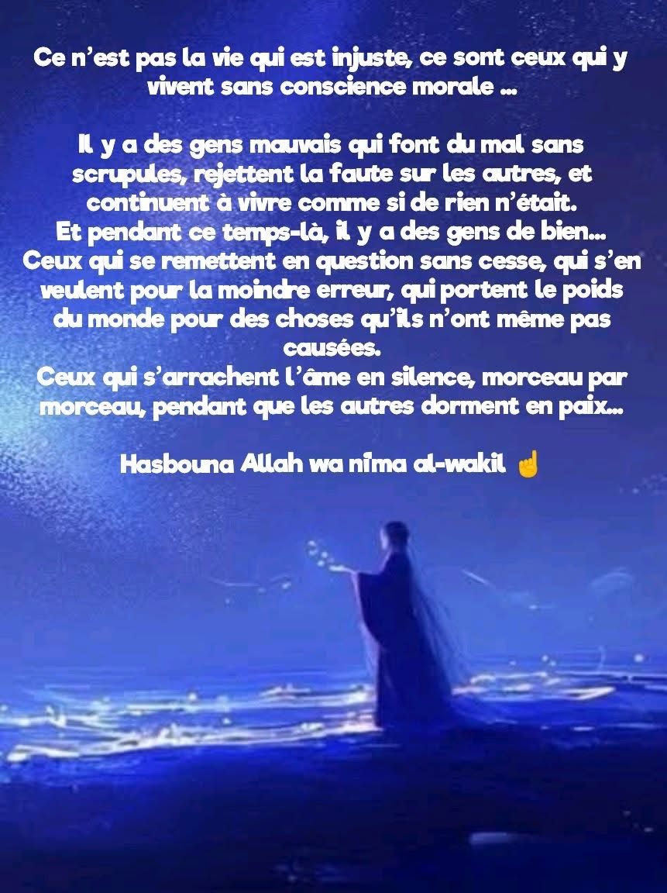

Quand le mal dort en paix et que le bien s’accuse en silence

Il ne s’agit pas d’une vie injuste, mais d’une humanité déséquilibrée.
Un monde où ceux qui causent le mal avancent sans scrupules,
pendant que ceux qui portent le bien en eux se remettent en
question, jusqu’à s’accuser eux-mêmes de fautes qu’ils n’ont pas
commises.
Il y a ceux qui blessent, mentent, écrasent, et dorment profondément
la nuit.
Et il y a ceux qui donnent, écoutent, soutiennent… et pourtant, se
demandent sans cesse s’ils en ont fait assez, ou s’ils ont fait du tort
sans le vouloir.
Ces contrastes frappent. Ils dérangent.
On aimerait croire que la conscience est équitablement répartie. Mais
en vérité, elle pèse lourd chez les justes et devient muette chez les
égoïstes.
Face à cette injustice morale, beaucoup s’effondrent intérieurement.
Ils souffrent en silence, portant des douleurs qui ne leur
appartiennent pas.
Ils culpabilisent à la place de ceux qui refusent de reconnaître leurs
torts.
Mais il est important de se rappeler ceci :
“Hasbuna Allah wa ni’ma al-wakîl”
Allah nous suffit, Il est le Meilleur des protecteurs.
Cette parole, simple et puissante, est un refuge.
Car au-delà de l’injustice des hommes, il y a la justice d’Allah.
Au-delà des accusations injustes, il y a un Savoir Parfait.
Et au-delà de ce déséquilibre humain, il y a un équilibre divin qui, tôt ou
tard, rétablit les choses.
À ceux qui souffrent en silence :
Ton cœur n’est pas faible, il est pur.
Ta douleur n’est pas une faiblesse, mais une preuve de ta profondeur.
Continue à faire le bien, même si personne ne le voit.
Continue à marcher droit, même si ceux qui t’entourent marchent de
travers.
Car celui qui agit pour Allah n’est jamais perdant.